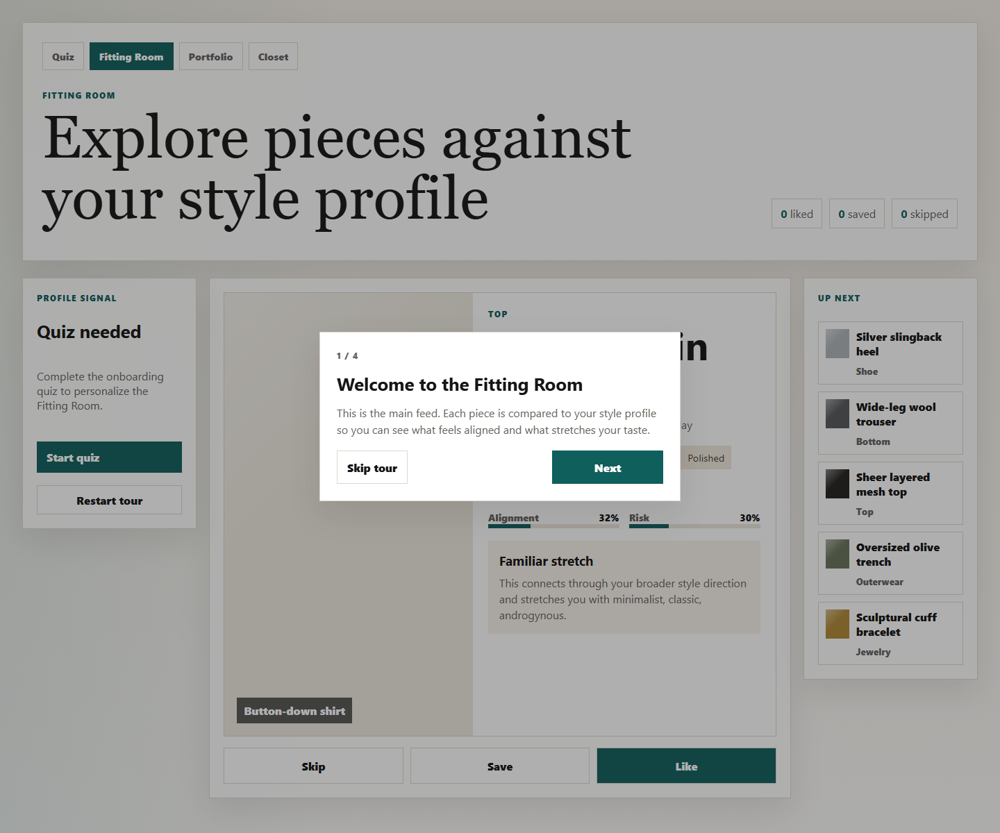

Machine Learning-Inspired Product Project
ML Styling App
A personal styling app designed to enhance a user's expression. It assesses a user's style, recalibrates as they like or save individual pieces, and lets them combine clothing into outfit ideas.
Best features: riskiness calibration, adaptive taste profiling, and a personal portfolio for saved style inspiration.
Demo available during presentation